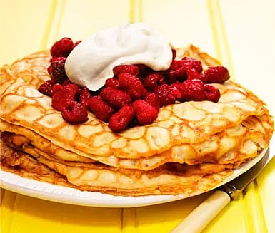

Pancakes

Description
A Swedish classic. Pancakes fryed to a nice golden and served with raspberrys
and maybe some whipped cream on top. Good for both dessert and dinner.
Ingredients
- 1 Package raspberrys (about 250 g)
- 2 1/2dl Flour
- 6 dl Milk
- 3 Eggs
- 1/2 tsk Salt
- 2 msk Butter
Steps